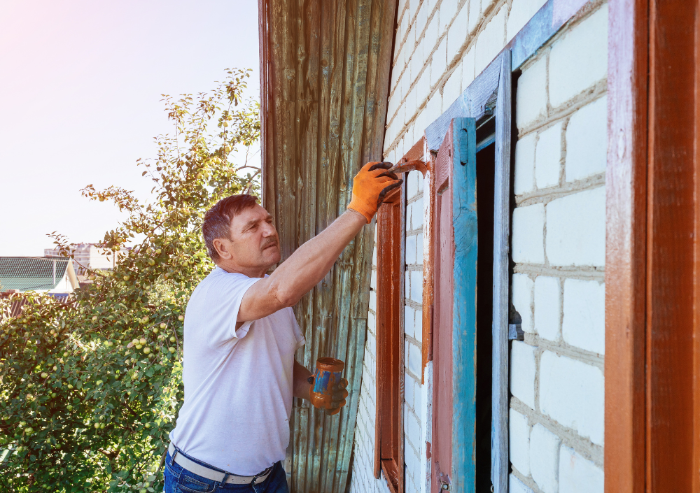

Lupa Painting Blog · Exterior Painting Guides
Exterior Painting the Professional Way: How to Get a Beautiful Finish That Lasts 10+ Years
Learn the step-by-step process professional painters use outdoors — from surface washing and repairs to primers, paints, and application techniques that stand up to sun, rain, and New England winters.

Exterior paint is more than color — it is your home’s first layer of protection against sun, rain, wind, snow, and daily wear. A good exterior paint job can make a house look brand new and protect the siding for a decade or more. A bad one can start peeling, fading, and cracking in just a couple of seasons.
The difference isn’t magic and it’s not only the brand of paint. Professional painters use a strict, methodical process that focuses on surface preparation, weather conditions, product selection, and application technique. In this guide, you’ll see exactly how an exterior painting project should be done when the goal is long-term durability, not just a quick color change.
1. Proper Power Washing: Starting With a Clean, Sound Surface
Every professional exterior job starts with a deep cleaning. Paint does not stick to dirt, mold, chalked paint, or pollution residue. If these contaminants are not removed first, even the best paint will fail prematurely.
What professionals remove during washing
- Dirt and dust from siding, trim, and soffits.
- Mold and mildew, especially in shaded or damp areas.
- Loose or chalking paint that has started to break down.
- Grease and pollution buildup near roads and driveways.
- Cobwebs, insect nests, and organic debris.
How pros power wash correctly
- Use a professional pressure washer (often 2,500–3,000 PSI) with the right tips for each surface.
- Apply biodegradable cleaners or mildewcides when needed, then rinse thoroughly.
- Avoid blasting water under lap siding, into vents, or around windows.
- Clean from top to bottom so dirty water doesn’t run over freshly cleaned areas.
Pro insight: Washing is not about “removing paint”; it’s about removing everything between the siding and the new paint. A properly cleaned exterior helps primer and paint bond tightly, which is the foundation of a long-lasting finish.
2. Scraping, Sanding & Repairs: Fixing the Problems Before They Get Painted Over
Once the home is dry, professionals move into the most labor-intensive part of the project: scraping, sanding, and repairing. This is where failing paint is removed, edges are smoothed, and damaged areas are restored.
Key steps professionals follow
- Paint scraping: remove all loose, flaking, or blistering paint with hand scrapers and specialty tools.
- Feather sanding: sand the edges where old paint meets bare substrate to create smooth transitions rather than visible ridges.
- Filling and patching: use exterior-rated wood fillers and epoxy to repair rotten spots, gaps, or nail holes in trim and fascia.
- Caulking: seal gaps around windows, doors, trim joints, and other penetrations to prevent moisture intrusion.
Exterior repairs are not cosmetic only — they are about keeping water out of the building envelope. Trapped moisture is the main enemy of siding, trim, and paint systems.
3. Watching the Weather: Why Timing Is Critical for Exterior Painting
Exterior painting is not something professionals schedule randomly. Weather conditions have a huge impact on how paint adheres, cures, and ultimately performs.
Ideal conditions for painting outdoors
- Surface temperature and air temperature typically between 50°F and 85°F.
- No rain in the forecast for at least 24–48 hours after application.
- Moderate humidity levels (not extremely humid or extremely dry).
- Minimal direct, harsh sunlight on the surface being painted.
- No strong winds that cause overspray and dry paint too quickly.
Painting too early after rain, on surfaces that are still damp, or in direct blazing sun can lead to adhesion problems, lap marks, and premature cracking. Experienced painters will often “chase the shade” around the house, painting surfaces at the right time of day.
4. Choosing the Right Primer & Exterior Paint for Long-Term Durability
The products used outdoors must handle ultraviolet light, moisture, temperature swings, and seasonal movement of the building materials. Professionals select systems (primer + paint) based on both the substrate and the local climate.
Common exterior substrates and what they need
- Wood siding & trim: high-quality bonding primer to seal knots and prevent tannin bleed, followed by flexible, high-build exterior paint.
- Fiber cement (Hardie): acrylic exterior paints with good adhesion and color retention.
- Stucco & masonry: masonry primers and elastomeric or breathable acrylic paints.
- Previously painted metal: rust-inhibiting primer if needed and durable acrylic or urethane-modified topcoats.
Popular pro-grade exterior paint lines
- Sherwin-Williams Duration, SuperPaint, or Emerald Exterior.
- Benjamin Moore Aura Exterior, Regal Select, or Ben Exterior.
- Behr Marquee Exterior (for homeowners using big-box options).
These paints cost more upfront but last significantly longer, resist fading, and are formulated to flex with the siding as temperatures change. Over the life of the home, they are almost always the most economical choice.
5. Spraying, Back-Brushing & Back-Rolling: How Pros Apply Paint Outdoors
The way paint is applied is just as important as which paint is used. On exteriors, professionals often use a combination of spraying and manual work to achieve both coverage and penetration.
Typical professional approach
- Airless spray application: allows painters to apply paint quickly and evenly over large areas of siding, especially on textured or detailed surfaces.
- Back-brushing or back-rolling: immediately after spraying, a painter follows with a brush or roller to push paint into grooves, cracks, and grain for better adhesion and coverage.
- Cutting in trim and edges by hand: doors, windows, corners, and details are brushed for crisp lines and clean transitions between colors.
Why back-brushing/back-rolling matters
Spraying alone can leave paint sitting on top of the surface, especially on rough wood or masonry. Back-brushing or back-rolling forces the paint deeper into the material, helping it bond and giving extra thickness where it’s needed most.
6. Number of Coats, Final Details & Jobsite Cleanup
Once washing, repairs, priming, and main coats are underway, professionals focus on consistency, protection, and presentation.
How many coats do pros apply?
- Typically two full finish coats over spot-primed or fully primed surfaces.
- Heavily weathered or color-change jobs may require additional coats in specific areas.
- Trim, doors, and high-impact areas often receive extra attention for durability.
Detail work that separates pros from quick jobs
- Painting down to the correct drip edge or flashing line (not over it).
- Carefully coating exposed end-grain on boards to reduce water absorption.
- Inspecting and touching up missed spots, light areas, and overlaps.
- Keeping hardware, roofs, and concrete free from overspray and drips.
After painting, professional crews perform a full cleanup: removing plastic and tape, collecting chips and debris, putting furniture and fixtures back in place, and leaving the property neat and ready to enjoy.
7. Maintaining Your Exterior Paint Job So It Truly Lasts
Even the best exterior paint job benefits from basic maintenance. A small amount of care each year can easily add several extra years of life to your finish.
Simple maintenance habits
- Rinse siding lightly once a year to remove dirt and pollutants.
- Trim back shrubs and trees that constantly rub against the house.
- Check caulk lines around windows and doors and re-caulk as needed.
- Address small paint failures early instead of waiting for large sections to peel.
Rule of thumb: with professional prep, quality primer and paint, and basic maintenance, many exteriors can look great for 8–12 years or more before a full repaint is needed.
Conclusion
Exterior painting is one of the most valuable upgrades you can make to your home. Done correctly, it protects your investment, boosts curb appeal, and reduces costly repairs caused by moisture and weather.
By understanding the professional process — from power washing and repairs to primers, paint selection, weather planning, and application techniques — you can better evaluate quotes, ask the right questions, and choose a painting company that treats your home like a long-term investment, not a quick weekend project.